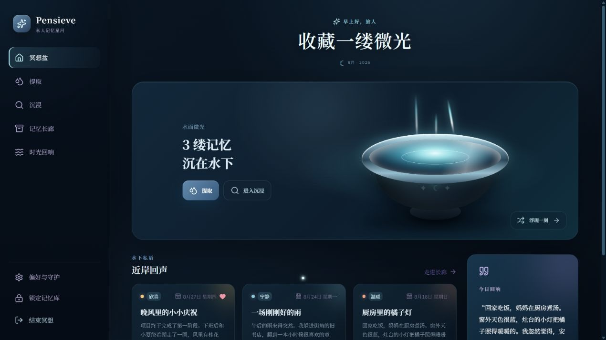
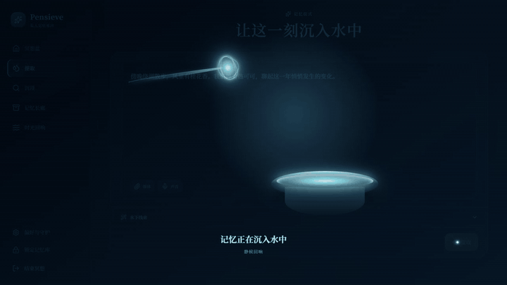
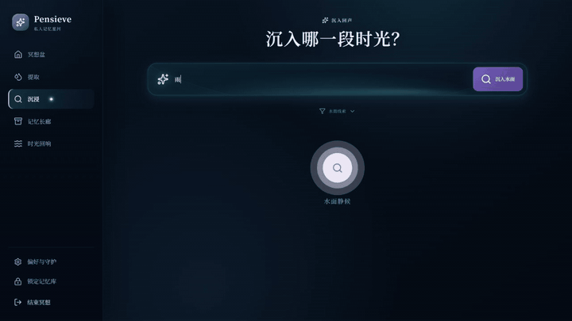
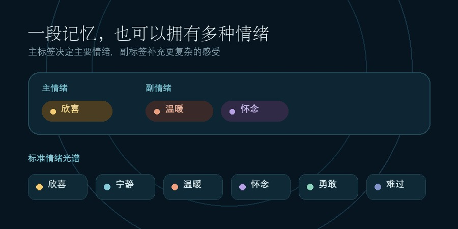
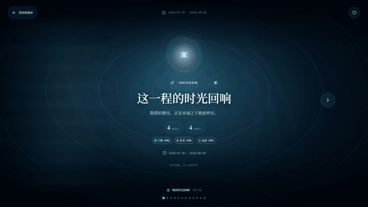
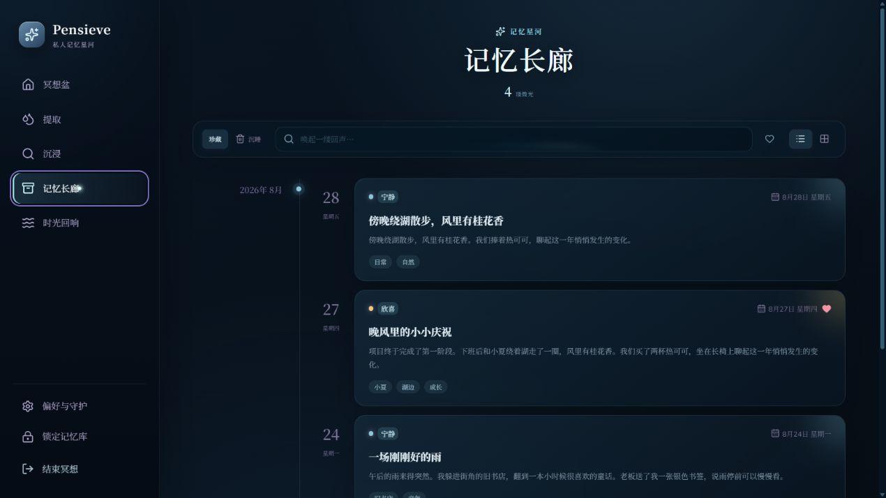
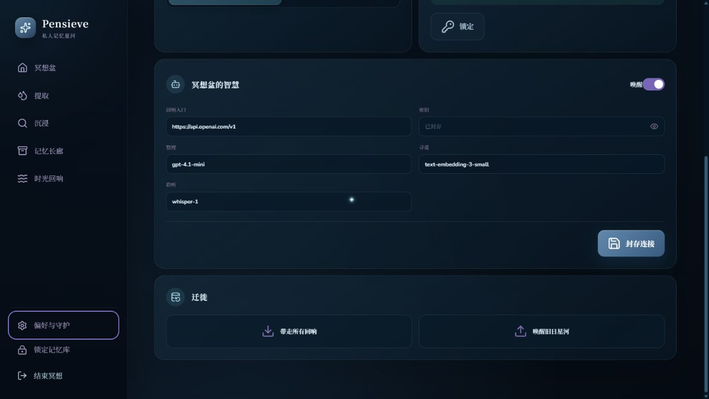
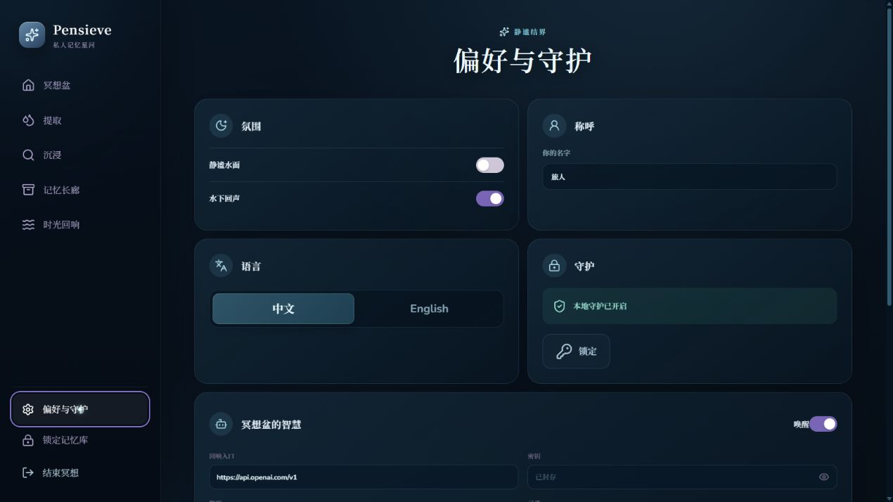
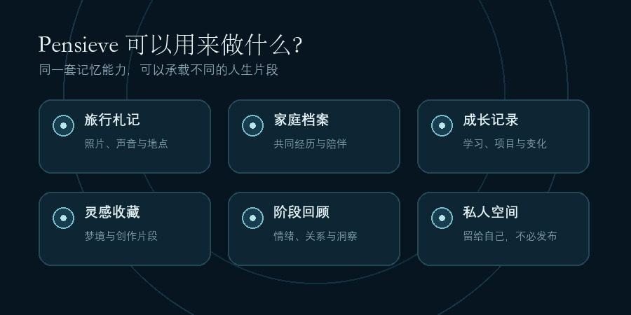
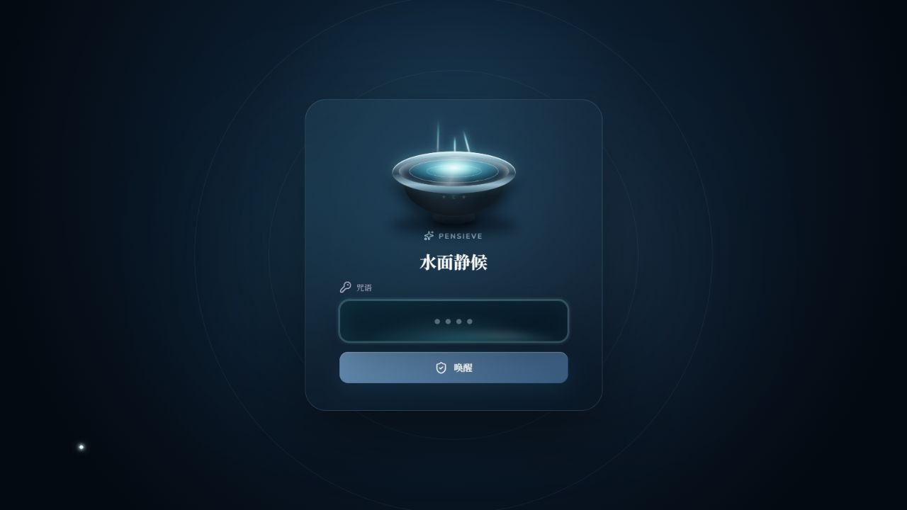

一和札记 · 创造
我把《哈利·波特》的“冥想盆”
做成了一款私人记忆软件
它能保存文字、照片、视频和声音，用 AI 整理线索，通过自然语言找回往事，并总结一整段时间。

01 · 快速提取
只写内容，其余交给 AI
记录记忆时，默认界面只保留一个正文输入区。你可以写下一段话，也可以加入照片、视频、音频，或者直接录下一段声音。
标题、情绪、时间和标签都放进高级选项，需要时再填写。点击“提取”后，应用会等待 AI 返回完整结果，再进入记忆详情。

魔杖携带记忆微光，缓缓浸入水面
AI 会完成：
提取标题 · 判断主情绪与副情绪 · 识别人物、地点和主题 · 标准化并去重标签
原始正文保持原样。AI 负责整理线索，而不是生成摘要、改写措辞或替你重新讲述经历。
02 · 沉浸寻找
记得很模糊，也能把它找回来
回忆往往只剩下一些场景：“下雨时去过的旧书店”“和朋友在湖边散步的那一次”“最近让我觉得很温暖的事情”。
在“沉浸”页面，可以直接用这样的自然语言寻找记忆。

还可以继续按主情绪或副情绪、起止日期、媒体类型和爱心状态缩小范围。
找到记忆后，可以进入沉浸回放。图片会应用低亮、冷色的“回忆滤镜”，与正文分区显示；音频、视频和文字在同一环境中播放。
正文、发生时间和附件都可以继续增删修改，也可以重新运行 AI 分析。重新分析只更新标题、情绪与标签。
03 · 多元情绪
一段记忆可以同时拥有多种情绪
Pensieve 使用欣喜、宁静、温暖、怀念、勇敢与难过六类标准情绪。AI 会给出一个主情绪，也可以给出若干副情绪。
这些标签会真正参与搜索、筛选和统计。人物、地点和主题标签也会分别存储并在本地去重。

一个主情绪，也可以带有若干副情绪
04 · 时光回响
用 AI 总结一段时间
选择一个北京时间范围，Pensieve 会从记忆数量、情绪分布、人物关系、地点场景、主题事件、珍贵片段和变化洞察等维度生成报告。

报告会作为独立快照保存进档案库，可以重命名、收藏或删除。
阅读时每次显示一个章节，通过左右按钮、方向键或触屏滑动切换；代表性片段可以直接“沉入原记忆”。
05 · 长廊与珍藏
浏览、珍藏、回收与重新浮现
记忆长廊提供时间线和网格视图；点亮爱心后，记忆会进入“最珍贵记忆”筛选；主页“今日回响”会从真实的本地记忆中带回一个旧日片段。
删除先进入回收站，可以恢复；彻底删除会再次确认，并同步清理记录、索引和附件。

时间线、珍藏筛选与真实记忆卡片
06 · 附件与备份
附件会复制进加密记忆库
加入照片、音频或视频后，桌面版会把附件复制进应用的加密存储区域，而不是只保存原路径。
导出 `.pensieve` 备份时，全部记忆、媒体附件和时光回响档案会一起打包；恢复时也会完整带回。

记忆、附件与时光回响档案一起迁徙
07 · 本地优先
AI 由用户主动启用
Windows 桌面版使用本地加密数据库保存记忆、报告与附件。AI 默认关闭，可以配置自己的 OpenAI 兼容 API 地址、模型和密钥。
生成时光回响时，图片、视频和音频原文件留在本地。应用还提供 PIN 锁定、中英文界面、减少动态效果和高对比度适配。

语言、守护与 AI 连接都由用户配置
08 · 使用场景
它可以用来做什么？
旅行照片与声音札记、家庭私人档案、成长记录、灵感与梦境收藏、阶段性情绪回顾，或者一个不必发布到社交网络的个人记忆空间。

旅行、家庭、成长、灵感、回顾与私人空间
PENSIEVE · OPEN SOURCE
现在开始使用
下载并安装，设置称呼与 PIN，按需启用 AI，然后在“提取”中保存第一段记忆。

一和 · 写于「一和札记 · 创造」
说明：Pensieve 是独立开发的开源个人项目，灵感来自“以容器承载和重访记忆”的幻想意象，与 J.K. Rowling、Warner Bros.、Wizarding World 及其关联方无隶属或合作关系。相关作品名与商标归各自权利人所有。